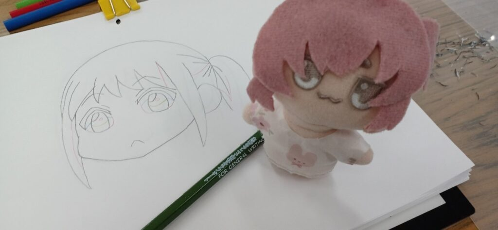
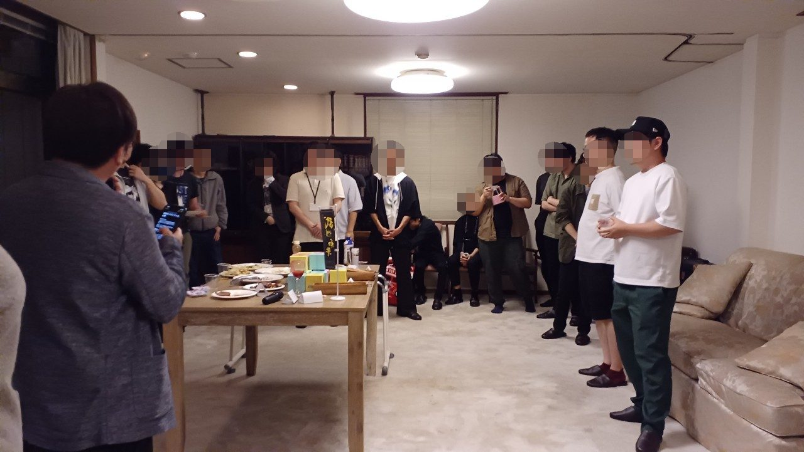

東京と中国、
2つのスタジオで
描いています。
仮の文章

DOMESTIC STUDIO国内スタジオ lolroute（ルート）
2021年設立・東京。出社して作画しているスタッフの正社員率100%。検査・リテイク・急ぎの話数を受け持つ国内拠点です。

OVERSEAS STUDIO直営海外スタジオ reboot China
2016年設立。rebootの仕事だけを行う直営スタジオで、数カ月に一度、社員が現地で直接指導・会議を行っています。
rebootの強み


※動画検査・色指定検査は国内作業のみです。国内作業やレイアウト・作監・動画検査・色指定検査・線撮は、海外動仕をいただける会社様を優先してお引き受けしております。


制作会社の方の
「声」をご紹介。
動画・仕上げをご依頼いただいている制作会社の方からいただいた声です。
仮の文章 制作プロデューサー
制作プロデューサー「急ぎの話数でも、国内で検査してから上げてくれるので安心して任せられます。」
〇〇株式会社 制作プロデューサー 〇〇様（掲載許可を確認中） 制作進行
制作進行「枚数の多い話数を相談したら、2拠点で振り分けて納期どおりに上げてもらえました。」
〇〇スタジオ 制作進行 〇〇様（掲載許可を確認中） ラインプロデューサー
ラインプロデューサー「動画から仕上げまで窓口がひとつなので、やりとりが少なくて助かっています。」
〇〇株式会社 ラインプロデューサー 〇〇様（掲載許可を確認中）


描く毎日を、
lolrouteで、
さあ一緒に。
国内スタジオ lolroute でアニメーターを募集しています。出社して作画しているスタッフの正社員率は100%。専門学校のご担当者様からのご連絡も歓迎しています。
仮の文章


